One platform. Every treatment.
Treatment abroad — vetted, planned and guided.
Konan Cak International arranges and accompanies medical treatment at vetted partner clinics in Türkiye [and other countries]. Before you receive an offer, doctors review your records – and tell you if a treatment does not make sense for you.
- Dentistry Implants, veneers, crowns
- Hair FUE, DHI, PRP
- Aesthetics Nose, eyelids, contouring
- Eyes LASIK, SMILE, lenses
-

Bariatrics Gastric sleeve, bypass - More Orthopaedics, check-up
- Vetted clinics
- Fixed cost plan
- Personal support
Treatments
Why patients come to us
Our patients are people considering treatment abroad who want to leave nothing to chance. We arrange treatment in six specialties – always after a medical review of your records, and with one dedicated contact person.
 Area 01
Area 01
Hair transplant
For men and women with hereditary hair loss or thinning areas. Partner doctors use photos to assess whether there is enough donor hair and which method (FUE, DHI) is suitable.
- FUE, DHI, additionally PRP
- usually 2–3 days on site
 Area 02
Area 02
Dentistry & implants
Implants, crowns, bridges and veneers for missing teeth or extensive restoration needs. A current X-ray is the basis; the treatment plan shows how many stays are needed.
- Implants, crowns, bridges, veneers
- usually two stays
 Area 03
Area 03
Aesthetic plastic surgery
Rhinoplasty, eyelid surgery and body contouring. Before any offer, partner doctors clarify whether the procedure is medically justifiable and what the risks are.
- Rhinoplasty, eyelid surgery, contouring
- approx. 5–10 days on site
 Area 04
Area 04
Ophthalmology & laser eye surgery
LASIK, SMILE and lens procedures to correct refractive errors. Whether your eyes are suitable is decided by a preliminary examination of corneal thickness and vision.
- LASIK, SMILE, lens procedures
- usually 2–4 days on site
Orthopaedics & joint replacement
Hip and knee replacements and other orthopaedic procedures. Here, planning the rehabilitation after surgery matters as much as the operation itself.
- Hip and knee replacement
- approx. 10–14 days on site
 Area 06
Area 06
Bariatric surgery
Gastric sleeve and gastric bypass for severe obesity. We only arrange treatment after a medical review of BMI, pre-existing conditions and your commitment to long-term aftercare.
- Gastric sleeve, gastric bypass
- approx. 5–7 days on site
Six stages
From your first message to your final check-up
Treatment with us follows six stages. At every step you know what happens next, what it costs and who your contact is.
-
01
Enquiry
You describe your concern and send records or photos if you have them. We get back to you personally.
Day 1 -
02
Medical review
Partner doctors assess your records and tell you whether and how treatment is an option.
24 – 48 hrs -
03
Cost plan
You receive a written cost plan listing all services – with no obligation.
Days 2 – 4 -
04
Travel
On request, we arrange the appointment, transfers and accommodation.
once you choose a date -
05
Treatment
Your contact person is available on site and accompanies you through the clinic.
1 – 7 days -
06
Aftercare
We stay in touch, coordinate check-ups and are there for questions after you return home.
up to 12 months
About us
We stand between you and the clinic
Konan Cak International is not a clinic. We vet partner clinics, obtain medical assessments and represent your interests from your first question through to aftercare. We work by four fixed rules.
No offer without findings
We only quote a price once doctors have seen your records.
Everything in writing
You receive services, costs and dates bindingly in writing.
One contact person
One person accompanies you through every stage, in your language.
Advising against is part of the job
If a treatment does not make sense or is too risky, we tell you.
Tell us what you need.
The initial assessment by our partner doctors is free of charge and without obligation. You decide afterwards whether to go ahead.